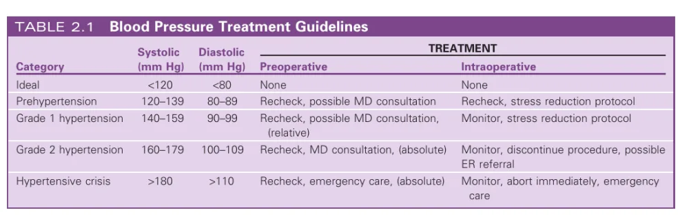
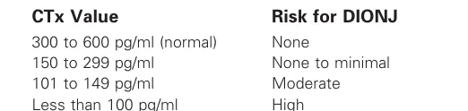

نسخه استخراجشده؛ ترجمه یا تأیید علمی انجام نشده است. وضعیت: captured
دو تعریف پایه را باید دقیق بدانی:
کنترااندیکاسیون مطلق = وضعیتی که پروسیجر را کاملاً غیرقابلتوصیه میکند.
کنترااندیکاسیون نسبی = وضعیتی که احتیاط لازم دارد و تا وقتی منافع بر خطرات بچربد پذیرفتنی است.
توجه کن که تعریف دوم یک سنجش است، نه یک برچسب. یعنی همان بیمار در دو طرح درمان متفاوت میتواند دو حکم بگیرد.
برای روشنتر شدن، کنترااندیکاسیونها را در سه دسته هم میچینند: جراحی — بیمار را حین عمل در خطر اورژانس پزشکی میگذارد ولی بر موفقیت ایمپلنت اثری ندارد (مثل بیماری قلبی پیشرفته)؛ ایمپلنت — ترمیم و موفقیت ایمپلنت را به خطر میاندازد ولی خطر پزشکی حین عمل نمیسازد (مثل بیسفسفونات وریدی)؛ و جراحی-ایمپلنت — هر دو خطر با هم.
مثالهای مطلق:
• ایمپلنت در ناحیهی ضایعهی فعال دیسپلازی فیبروز.
• استئومیلیت — مگر عوامل سببساز اصلاح شوند و خونرسانی کافی به ناحیه بازگردد.
• مصرف همزمان بیشتر داروهای شیمیدرمانی.
• بیسفسفونات وریدی، بهدلیل نگرانی از افزایش خطر استئونکروز فک.
و مثالهایی که مطلق نیستند: افزایش سن کنترااندیکاسیون مطلق نیست، و استئوپروز یک عارضهی نسبی است — بیشتر مطالعات بالینی نرخ شکست بیشتری در بیماران استئوپروتیک نشان ندادهاند، هرچند بیمار باید دربارهی عوارض ناشی از کیفیت پایینتر استخوان کاملاً آگاه شود.
قلب — عددی که باید بدانی. حدود ۱۸ تا ۲۰ درصد بیماران با سابقهی اخیر انفارکتوس میوکارد دچار افزایش عوارض میشوند، و این عوارض مرگومیر بالایی — ۴۰ تا ۷۰ درصد — دارند. راه پیشگیری: مشاورهی پزشکی.
و یک نکتهی فیزیولوژیک: درد و استرس، کاتکولآمینهای درونزاد (آدرنالین و نورآدرنالین) را آزاد میکنند؛ کاتکولآمینها فشار خون و برونده قلبی را بالا میبرند و بیمار را در معرض سکته یا ایست قلبی قرار میدهند. پس در بیمار پرفشار، کنترل درد و اضطراب اولویت دارد و بیحسی حاوی اپینفرین را آهسته و با آسپیراسیون تزریق کن.
ضدانعقاد — سنجش دو ریسک در برابر هم. قطع کوتاهمدت وارفارین در دورهی پیرامون عمل با خطر ترومبوآمبولی ۰٫۷ درصد و خطر خونریزی بالینی معنادار ۱٫۷ درصد همراه است. عوامل ضدپلاکتی مانند آسپیرین یا کلوپیدوگرل نیز ممکن است بهتنهایی یا ترکیبی بهعنوان بخشی از پیشگیری از سکته مصرف شوند.
ببین چه اتفاقی میافتد: هر دو عدد کوچکاند، ولی پیامدهایشان هموزن نیستند. تصمیم دربارهی قطع دارو، سنجش دو ریسک نامتقارن است — و این سنجش کار پزشک بیمار است، نه تو بهتنهایی.
فشار خون — دستهبندیای که باید در اتاق جراحی حفظ باشی. بر پایهی راهنمای JNC8 (فوریهی ۲۰۱۴) پروتکل روشنی وجود دارد:
• ایدهآل (زیر ۱۲۰ / زیر ۸۰): بدون اقدام.
• پیشپرفشاری (۱۲۰–۱۳۹ / ۸۰–۸۹): تکرار اندازهگیری، احتمال مشاورهی پزشکی؛ حین عمل پروتکل کاهش استرس.
• پرفشاری درجه ۱ (۱۴۰–۱۵۹ / ۹۰–۹۹): تکرار، احتمال مشاوره — نسبی؛ حین عمل پایش و کاهش استرس.
• پرفشاری درجه ۲ (۱۶۰–۱۷۹ / ۱۰۰–۱۰۹): تکرار و مشاورهی پزشکی — مطلق؛ حین عمل پایش، قطع پروسیجر و احتمال ارجاع اورژانس.
• بحران پرفشاری (بالای ۱۸۰ / بالای ۱۱۰): تکرار و مراقبت اورژانسی — مطلق؛ حین عمل توقف فوری و مراقبت اورژانسی.
و یک قاعدهی عملی: خوانشهای بالا (بیش از ۱۶۰/۱۰۰) باید با روش دستی تأیید شوند و پروسیجر تا بازگشت فشار به نزدیک پایهی بیمار متوقف بماند. اگر از دستگاه خودکار استفاده میکنی، باید یک فشارسنج دستی هم در دسترس باشد.
چرا اینقدر جدی؟ پرفشاری سالانه حدود ۷٫۱ میلیون مرگ در جهان و ۶۲ درصد بیماریهای عروق مغزی و ۴۹ درصد بیماری ایسکمیک قلب را به خود اختصاص میدهد. حدود ۳۰ درصد بزرگسالان مبتلا نمیدانند مبتلا هستند و دو سوم درمانشدگان به زیر ۱۴۰/۹۰ کنترل نشدهاند. یعنی احتمال اینکه بیمار پرفشارِ کنترلنشده روی صندلی تو بنشیند، بالاست.
دو نکتهی همراه: بیماران پرفشار مستعد هیپوتانسیون ارتواستاتیک هنگام بلند شدن از حالت خوابیدهاند — راهحل: بلند کردن آهسته و توصیه به هیدراتاسیون پیش از جراحی (مگر کنترااندیکاسیون جدی مانند نارسایی احتقانی قلب یا ادم مزمن). و NSAIDها اثر بسیاری از داروهای ضدفشار خون را کم میکنند و میتوانند به اپیزود پرفشاری حین عمل بینجامند.

بیسفسفونات و تست CTx. مقادیر CTx و خطر استئونکروز مرتبط با دارو اینگونه دستهبندی میشوند:
• ۳۰۰ تا ۶۰۰ pg/ml (نرمال) → خطر: هیچ
• ۱۵۰ تا ۲۹۹ pg/ml → خطر: هیچ تا حداقلی
• ۱۰۱ تا ۱۴۹ pg/ml → خطر: متوسط
• کمتر از ۱۰۰ pg/ml → خطر: بالا
اما — و این «اما» مهم است — امروز استفاده از تست CTx برای تعیین احتمال استئونکروز مورد مناقشه است. یعنی این دستهبندی را بهعنوان یک ورودی به تصمیم به کار ببر، نه بهعنوان حکم نهایی.
بسته به مقادیر آزمایشگاهی، ممکن است «تعطیلی دارویی» (drug holiday) — قطع موقت درمان بیسفسفونات — اندیکاسیون پیدا کند؛ تصمیمی که با پزشک تجویزکننده گرفته میشود.
پروتکل تعطیلی دارویی: قطع دارو ۹ ماه پیش از جراحی و ۳ ماه پس از جراحی. اما یک هشدار مهم: بهبود سطح بیسفسفونات ممکن است اصلاً دیده نشود، چون نشان داده شده مقادیر قابلاندازهگیری تا ۱۲ سال پس از قطع درمان در استخوان باقی میمانند.
ریکلست (زولدرونات وریدی). با دوز ۵ میلیگرم وریدی سالی یک بار تجویز میشود و مطالعات نشان دادهاند خطر معنادار پس از چهارمین دوز سالانه رخ میدهد — بهدلیل تجمع دارو و نیمهعمر ۱۱ ساله. بهترین زمانبندی جراحی انتخابی ایمپلنت یا پیوند استخوان: ۹ ماه پس از آخرین دوز و ۳ ماه پیش از دوز بعدی.
و معیارهای تشخیص DIONJ: ۱) درمان فعلی یا قبلی با دارویی سیستمیک که هومئوستاز استخوان را تحت تأثیر قرار میدهد، ۲) استخوان آلوئولار اکسپوز در فکها که بیش از ۸ هفته باقی میماند، ۳) نبود سابقهی رادیوتراپی فک، ۴) نبود تشخیص شناختهشدهی استئوپتروزیس یا دیسپلازی سمنتو-اُسئوس.
و نکتهای که در انتخاب بیمار مهم است: بیسفسفوناتهای خوراکی حاوی نیتروژن — مانند ریزدرونات، ایباندرونات و آلندرونات — که رایجترین مواجههی دندانپزشک ایمپلنتاند، طبق جدیدترین مطالعات احتمال بسیار پایینی برای ایجاد استئونکروز دارند.
اما چون نیمهعمر طولانی است و مطالعات کوتاه (حدود سه سال) بودهاند، عوارض بلندمدت ممکن است هنوز آشکار نشده باشند. توصیهی استاندارد: اگر بیمار بیش از ۳ سال این دارو را مصرف کرده، فرم رضایت مستند همراه با مشاورهی پزشکی احتمالی توصیه میشود.
کورتیکواستروئید سیستمیک. مطالعات حیوانی نشان دادهاند استئواینتگریشن مختل میشود؛ اما تا امروز هیچ مطالعهای افزایش موربیدیتی یا شکست ایمپلنت را در بیماران تحت کورتیکواستروئید سیستمیک نشان نداده است.
خطر واقعی جای دیگری است: در بیماری که دوز بالای کورتیکواستروئید گرفته، محور هیپوتالاموس-هیپوفیز-آدرنال ممکن است سرکوب شده باشد و جراحی او را در معرض بحران آدرنال بگذارد؛ پیشگیریاش پوشش استروئیدی مکمل با هماهنگی پزشک است.
این تفاوت میان دادهی حیوانی و دادهی بالینی را جدی بگیر؛ یکی از رایجترین خطاهای استدلالی در این حوزه، تعمیم مستقیم اولی به دومی است.
سیگار. یک آمار: در ایالات متحده حدود ۴۲٫۱ میلیون نفر — یعنی ۱۸٫۱ درصد بزرگسالان بالای ۱۸ سال — سیگار میکشند. یعنی این پرسش در پرسشنامه، برای حدود یک نفر از هر پنج بیمار پاسخ مثبت خواهد داشت.
گیاهان دارویی — فهرستی که معمولاً پرسیده نمیشود. این گیاهان تداخلهای مشخصی با بیهوشی دارند:
• چای سبز: کاهش اثر آتروپین خوراکی
• دانگکوای: افزایش سداسیون و پایین آوردن آستانهی تشنج
• کاوا و سنبلالطیب: افزایش سداسیون — سنبلالطیب با اوپیوئیدها هم تداخل دارد
• ویتامین C در دوز بالا: تضعیف بیهوشی
• یوهیمبه: تداخل با برخی مسکنها مانند مورفین
چرا این فهرست مهم است؟ چون بیماران معمولاً مکمل گیاهی را «دارو» نمیدانند و در پرسشنامه ننویسند. اگر نپرسی، نمیدانی.
